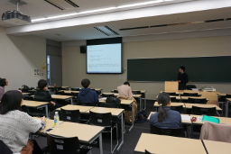
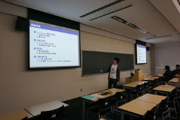
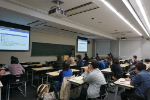
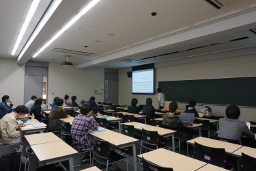
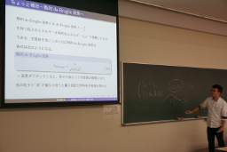
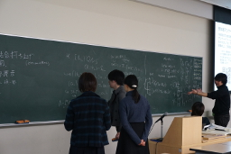

数物セミナー 冬の大談話会2015 量子論談話会 in 慶應
12月5日(土)に開催の慶應2015年冬の談話会は量子論をテーマとした談話会となっています。
1925年のHeisenbergの行列力学、1926年のSchrödingerの波動力学から90年目の節目となる今年、量子論における基礎や応用、その数理的側面という3つの視点から量子論を見てみる講演をお楽しみ下さい。
ポスターセッションは、飛び入りも大歓迎です。印刷したポスターをお持ちください。
| 談話会とは | 過去の談話会 | |
| 数物セミナーでは、各大学の教室などを借りて不定期に談話会を行っています。 談話会とはどのようなものであるのか知りたい方はご覧ください。 | 過去に行われた談話会の講演の詳細および、 一部のUstream配信アーカイブ・講演スライドなどを掲載していますので 参考にしていただければと思います。 | twitterでも談話会の情報を配信しております。 アカウントをお持ちの方はフォローしてみてください。 |

|
|
数物セミナー公式Twitterアカウント |
日にち・場所
2015年12月5日(土)
慶應義塾大学 日吉キャンパス 独立館D410教室
タイムテーブル
| 12:15～ | 開場 |
| 12:45～14:00 | 『量子系における情報熱力学』 平澤 尚之（慶應義塾大学理工学部物理学科2年） |
| 14:10～15:25 | 『量子力学と作用素環』 紅村 冬大（慶應義塾大学理工学部数理科学科3年） |
| 15:35～16:50 | 『超伝導とマクロ系での量子現象』 西村 健太郎（慶應義塾大学理工学部物理学科3年） |
| 16:50～17:00 | 数物セミナー紹介 |
| 17:00～18:00 | ポスターセッション・交流 (ポスター発表希望の方は、ご自分でポスターの用意を お願いいたします。事前連絡は不要です) |
講演アブストラクト
◇『量子力学と作用素環』 アブストラクト
◇『量子系における情報熱力学』 アブストラクト
◇『超伝導とマクロ系での量子現象』 アブストラクト
アルバム
|  |  |
{kind=link}
{kind=link}
|  |  |
{kind=link}
{kind=link}
|  |  |
{kind=link}
{kind=link}
アクセス
東急東横線・東急目黒線・横浜市営地下鉄グリーンライン「日吉駅」から教室まで徒歩5分
教室が大変わかりにくいところにございます。立て看板による誘導を行う予定ですが、ご了承ください。
ポスター
生放送・録画配信について
この談話会では講演の生放送及び録画配信は行われない予定です。